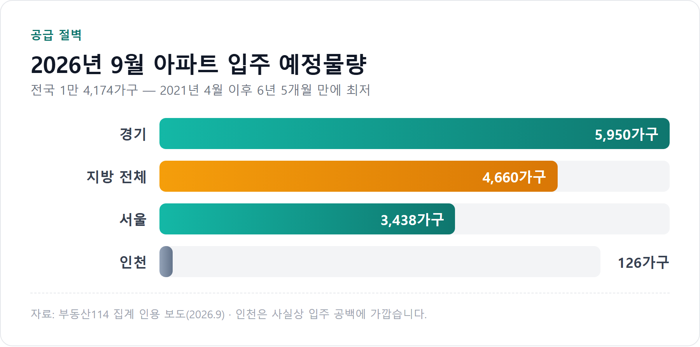
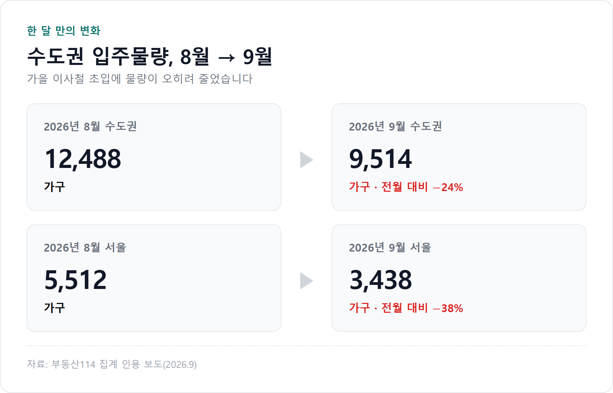
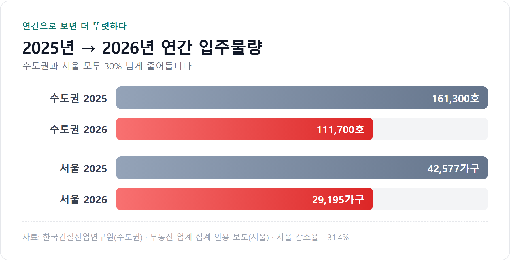
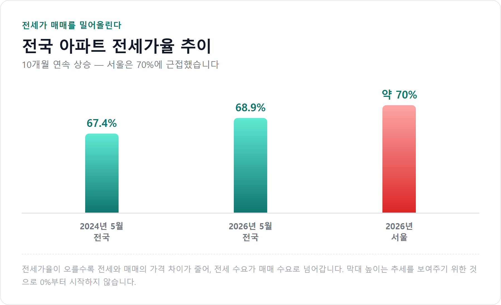
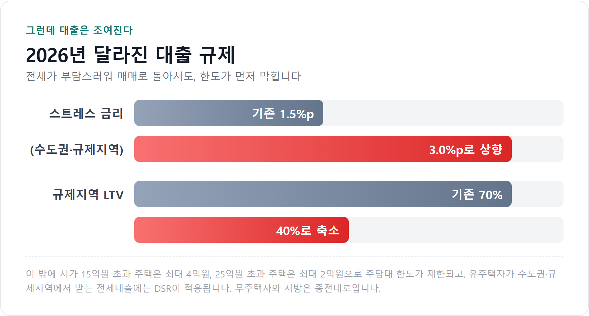

<meta charset="utf-8">
<title>9월 입주물량 6년 5개월 만에 최저 — 나의 투자 그리고 행복한 여행</title>
<meta name="description" content="2026년 9월 전국 아파트 입주 예정물량 1만 4,174가구로 6년 5개월 만에 최저. 전세가율 68.9%, 스트레스 DSR 3.0%p까지 공급과 대출 규제를 함께 정리했습니다.">
<meta name="viewport" content="width=device-width, initial-scale=1">
<link rel="canonical" href="https://danielmoon82.github.io/moon/posts/jeonse-supply-2026-09-09.html">
<link rel="preconnect" href="https://fonts.googleapis.com">
<link rel="preconnect" href="https://fonts.gstatic.com" crossorigin>
<link rel="stylesheet" href="https://fonts.googleapis.com/css2?family=Hahmlet:wght@400;600;800&family=IBM+Plex+Mono:wght@400;500&family=IBM+Plex+Sans+KR:wght@300;400;500;600&display=swap">

<style>
  :root{
    --paper:#E7EBF1;--surface:#F4F6FA;--surface-2:#DCE2EC;
    --ink:#0F1729;--ink-2:#3D4A63;--ink-3:#6B7891;
    --line:#C6CEDB;--line-soft:#D6DCE6;--accent:#B06A15;--accent-bright:#C2761A;
    --up:#E5484D;--down:#3B82F6;
    --f-display:"Hahmlet",'Nanum Myeongjo',"Apple SD Gothic Neo",serif;
    --f-body:"IBM Plex Sans KR","Apple SD Gothic Neo","Malgun Gothic",sans-serif;
    --f-mono:"IBM Plex Mono","SFMono-Regular",Consolas,monospace;
    --pad:clamp(20px,5vw,64px);
  }
  @media (prefers-color-scheme:dark){
    :root:not([data-theme="light"]){
      --paper:#0B1120;--surface:#121A2C;--surface-2:#1A2439;
      --ink:#E9EEF7;--ink-2:#A9B5C9;--ink-3:#72809A;
      --line:#26314A;--line-soft:#1D2739;--accent:#E8A33D;--accent-bright:#F0B45C;
    }
  }
  *{box-sizing:border-box;}
  body{margin:0;background:var(--paper);color:var(--ink);font-family:var(--f-body);
    font-weight:300;font-size:1rem;line-height:1.75;-webkit-font-smoothing:antialiased;}
  a{color:inherit;}
  img{max-width:100%;height:auto;}
  .wrap{max-width:760px;margin:0 auto;padding-inline:var(--pad);}
  .nav{position:sticky;top:0;z-index:20;background:color-mix(in srgb,var(--paper) 88%,transparent);
    backdrop-filter:saturate(180%) blur(12px);border-bottom:1px solid var(--line);}
  .nav-in{display:flex;align-items:center;justify-content:space-between;height:58px;}
  .brand{font-family:var(--f-display);font-weight:600;font-size:1rem;letter-spacing:-.02em;text-decoration:none;}
  .back{font-family:var(--f-mono);font-size:.72rem;color:var(--ink-3);text-decoration:none;}
  .article{padding-block:clamp(40px,7vw,72px) clamp(56px,9vw,96px);}
  .eyebrow{font-family:var(--f-mono);font-size:.68rem;letter-spacing:.16em;text-transform:uppercase;
    color:var(--accent);margin:0 0 14px;}
  h1{font-family:var(--f-display);font-weight:800;font-size:clamp(1.6rem,4.4vw,2.3rem);
    line-height:1.3;letter-spacing:-.03em;margin:0 0 16px;}
  .byline{font-family:var(--f-mono);font-size:.72rem;color:var(--ink-3);
    padding-bottom:24px;border-bottom:1px solid var(--line);margin-bottom:32px;}
  h2{font-family:var(--f-display);font-weight:600;font-size:1.25rem;letter-spacing:-.02em;margin:42px 0 14px;}
  h3{font-family:var(--f-display);font-weight:600;font-size:1.05rem;letter-spacing:-.02em;
    margin:30px 0 10px;padding-top:14px;border-top:1px solid var(--line-soft);}
  h3 .code{font-family:var(--f-mono);font-size:.7rem;font-weight:400;color:var(--ink-3);margin-left:6px;}
  p{margin:0 0 18px;color:var(--ink-2);}
  ul.checks{margin:0 0 18px;padding-left:20px;color:var(--ink-2);}
  ul.checks li{margin-bottom:8px;font-size:.94rem;}
  table{width:100%;border-collapse:collapse;font-size:.88rem;margin-bottom:8px;}
  th{font-family:var(--f-mono);font-size:.66rem;letter-spacing:.06em;text-transform:uppercase;
    color:var(--ink-3);text-align:right;padding:8px 6px;border-bottom:1px solid var(--line);}
  th:first-child{text-align:left;}
  td{padding:10px 6px;border-bottom:1px solid var(--line-soft);color:var(--ink-2);}
  td.num{font-family:var(--f-mono);text-align:right;font-variant-numeric:tabular-nums;}
  td.up{color:var(--up);} td.down{color:var(--down);}
  .scroll{overflow-x:auto;}
  figure{margin:22px 0;}
  figure img{display:block;border-radius:3px;background:var(--surface-2);}
  figcaption{margin-top:8px;font-family:var(--f-mono);font-size:.68rem;color:var(--ink-3);text-align:center;}
  .note{margin-top:34px;padding:16px 18px;border-left:3px solid var(--accent);
    background:var(--surface);border-radius:0 3px 3px 0;}
  .note p{margin:0;font-size:.85rem;color:var(--ink-3);}
  .foot{border-top:1px solid var(--line);background:var(--surface);padding-block:30px 38px;}
  .foot p{margin:0;font-size:.8rem;color:var(--ink-3);}
</style>

<nav class="nav">
  <div class="wrap nav-in">
    <a class="brand" href="../index.html">나의 투자 그리고 행복한 여행</a>
    <a class="back" href="../index.html#stocks">← 시황으로</a>
  </div>
</nav>

<main class="wrap article">
  <p class="eyebrow">Market</p>
  <h1>2026년 9월 입주물량 14,174가구 — 공급 절벽과 대출 규제가 겹친 가을</h1>
  <p class="byline">부동산 · 2026-09-09 기준</p>

  <p>한 줄 요약: 2026년 9월 전국 아파트 입주 예정물량은 1만 4,174가구로 2021년 4월 이후 6년 5개월 만에 최저입니다. 같은 시기 전세가율은 10개월 연속 상승했고, 대출 규제는 강화됐습니다.</p>
  <p>전세 수요가 매매로 넘어갈 조건(전세가율 상승)과, 그 이동을 막는 조건(대출 한도 축소)이 동시에 성립한 국면입니다.</p>
  <p>이 글은 2026년 9월 9일 기준으로 확인 가능한 공개 수치만 모아 정리한 기록입니다.</p>
  <h2>1. 이번 달, 입주할 아파트가 이만큼밖에 없습니다</h2>
  <p>2026년 9월 전국 아파트 입주 예정물량은 1만 4,174가구입니다.</p>
  <p>올해 들어 월간 기준으로 가장 적은 물량이고, 2021년 4월(1만 3,354가구) 이후 6년 5개월 만에 최저입니다.</p>
  <figure><figcaption>2026년 9월 지역별 아파트 입주 예정물량</figcaption></figure>
  <p>지역별로 보면 경기 5,950가구, 지방 전체 4,660가구, 서울 3,438가구입니다.</p>
  <p>눈에 띄는 곳은 인천입니다. 126가구, 사실상 입주 공백에 가깝습니다. 인천에서 전세를 찾고 계신 분이라면 이번 달 매물이 없는 이유가 여기에 있습니다.</p>
  <p>지방도 사정이 좋지 않습니다. 4,660가구로 전년 같은 달보다 37% 줄었습니다. 흔히 공급 부족을 수도권 이야기로만 생각하는데, 올해는 지방이 더 가파르게 줄었습니다.</p>
  <h2>2. 한 달 사이에 이만큼 줄었습니다</h2>
  <p>더 중요한 건 방향입니다. 물량이 원래 적었던 게 아니라, 하필 이사철에 맞춰 줄었습니다.</p>
  <figure><figcaption>수도권·서울 입주물량, 8월에서 9월로</figcaption></figure>
  <p>수도권은 8월 1만 2,488가구에서 9월 9,514가구로, 한 달 만에 24% 줄었습니다.</p>
  <p>서울은 낙폭이 더 큽니다. 5,512가구에서 3,438가구로 38% 감소했습니다.</p>
  <p>입주물량은 임대차 시장에 가장 직접적으로 작용하는 변수입니다. 새 아파트에 입주가 시작되면 그 단지에서 전세 물량이 한꺼번에 쏟아지고, 주변 시세가 눌립니다. 반대로 입주가 없으면 그 완충재가 사라집니다.</p>
  <div class="note"><p>가을 이사철에 진입하는 시점에 아파트 입주 물량이 크게 줄면서 임대차 시장의 가격 민감도가 어느 때보다 커질 수 있다. — 부동산114</p></div>
  <p>가격 민감도가 커진다는 말은, 매물 한두 건이 빠지는 것만으로도 호가가 뛸 수 있다는 뜻입니다. 올가을 전세 시장이 유난히 불안정하게 느껴지는 이유입니다.</p>
  <h2>3. 이번 달만의 이야기가 아닙니다</h2>
  <p>한 달치 숫자는 계절적 변동일 수 있습니다. 그래서 연간으로 봐야 합니다.</p>
  <figure><figcaption>2025년 대비 2026년 연간 입주물량</figcaption></figure>
  <p>한국건설산업연구원에 따르면 2026년 수도권 신축 입주물량은 11만 1,700호로, 2025년 16만 1,300호보다 30% 이상 적습니다.</p>
  <p>서울만 떼어 보면 2025년 4만 2,577가구에서 2026년 2만 9,195가구로 31.4% 줄어듭니다.</p>
  <p>이 감소는 갑자기 생긴 일이 아닙니다. 아파트는 착공에서 입주까지 대략 3년이 걸립니다. 지금의 입주 부족은 2023~2024년 인허가와 착공이 급감한 결과가 시차를 두고 도착한 것입니다.</p>
  <p>반대로 말하면, 지금 당장 공급 대책이 나와도 그 물량이 시장에 도착하는 시점은 몇 년 뒤입니다. 올가을과 내년의 임대차 시장은 이미 정해진 물량 안에서 움직입니다.</p>
  <h2>4. 전세가율이 오르면 사람들은 매매로 옮겨갑니다</h2>
  <p>전세 물량이 부족하면 전셋값이 오릅니다. 전셋값이 오르면 전세가율이 올라갑니다.</p>
  <p>전세가율은 매매가 대비 전세가의 비율입니다. 이 숫자가 왜 중요하냐면, 전세와 매매 사이의 거리를 보여주기 때문입니다.</p>
  <figure><figcaption>전국 아파트 전세가율 추이</figcaption></figure>
  <p>2026년 5월 기준 전국 아파트 전세가율은 68.9%로 10개월 연속 올랐습니다. 2024년 5월 67.4%와 비교하면 1.5%포인트 상승했습니다. 서울은 70%에 근접했습니다.</p>
  <p>전세가율 70%가 무슨 의미인지 숫자로 보겠습니다. 매매가 10억원짜리 아파트의 전세가 7억원이라는 뜻입니다.</p>
  <p>전세로 들어가면 7억원이 묶이고, 2년 뒤 인상분을 또 마련해야 합니다. 사서 들어가면 3억원을 더 마련해야 하지만 그 집은 내 집입니다.</p>
  <p>이 3억원의 격차가 좁혀질수록 "이럴 바에는 사자"는 판단이 늘어납니다. 실제로 전세가율 상승과 함께 매매 전환 수요가 늘고 있다는 분석이 이어지고 있고, 서울 아파트값은 85주 연속 상승을 기록 중입니다.</p>
  <p>그러니까 지금의 매매가 상승은 투자 수요만의 결과가 아닙니다. 전세에서 밀려난 실수요가 상당 부분을 차지합니다.</p>
  <h2>5. 그런데 매매로 가는 문은 좁아졌습니다</h2>
  <p>여기서 2026년의 특이점이 나옵니다. 전세가 매매로 밀어내는 힘은 커졌는데, 매매로 넘어가는 통로는 반대로 좁아졌습니다.</p>
  <figure><figcaption>2026년 강화된 대출 규제</figcaption></figure>
  <p>바뀐 것을 하나씩 보겠습니다.</p>
  <ul class="checks">
    <li>스트레스 금리 — 수도권·규제지역 주택담보대출의 스트레스 금리 하한이 기존 1.5%p에서 3.0%p로 올랐습니다</li>
    <li>규제지역 LTV — 기존 70%에서 40%로 내려갔습니다</li>
    <li>고가주택 한도 — 시가 15억원 초과 주택은 최대 4억원, 25억원 초과 주택은 최대 2억원까지만 빌릴 수 있습니다</li>
    <li>전세대출 DSR — 유주택자가 수도권·규제지역에서 받는 전세대출은 DSR에 반영됩니다. 무주택자와 지방은 종전대로입니다</li>
  </ul>
  <p>여기서 스트레스 금리는 오해가 많은 항목이라 짚고 넘어가겠습니다.</p>
  <div class="note"><p>스트레스 금리는 실제로 내는 이자에 붙는 금리가 아닙니다. 앞으로 금리가 오를 위험을 미리 반영해서 '한도를 계산할 때만' 얹는 가상의 금리입니다.</p></div>
  <p>즉 이자가 늘어나는 게 아니라 빌릴 수 있는 금액이 줄어듭니다. 체감상으로는 이쪽이 더 아픕니다. 매달 나가는 돈은 그대로인데 살 수 있는 집의 가격대가 내려가기 때문입니다.</p>
  <p>실제로 이 규제가 적용되면서 같은 소득이라도 한도가 5,000만원에서 많게는 1억원 가까이 줄어든 사례들이 나오고 있습니다.</p>
  <h2>6. 그래서 지금 무엇을 확인해야 할까</h2>
  <p>상황마다 답이 다릅니다. 세 가지 경우로 나눠 보겠습니다.</p>
  <h2>전세 재계약을 앞두고 있다면</h2>
  <ul class="checks">
    <li>만기 6개월 전부터 주변 시세를 확인하세요. 이사철에 임박해 알아보면 선택지가 없습니다</li>
    <li>계약갱신청구권을 아직 쓰지 않았다면 인상률이 5%로 제한됩니다. 사용 여부를 먼저 확인하세요</li>
    <li>집주인이 실거주를 이유로 갱신을 거절할 수 있습니다. 이 경우 이사 계획을 미리 세워둬야 합니다</li>
    <li>올려줄 보증금을 전세대출로 메울 계획이라면, 유주택자인지 무주택자인지에 따라 DSR 적용이 달라집니다</li>
  </ul>
  <h2>전세에서 매매로 갈아탈 생각이라면</h2>
  <ul class="checks">
    <li>집을 보기 전에 대출 한도부터 확인하세요. 순서가 반대면 마음에 든 집을 못 사게 됩니다</li>
    <li>규제지역인지 아닌지에 따라 LTV가 40%와 70%로 갈립니다. 지역 확인이 먼저입니다</li>
    <li>한도는 호가가 아니라 KB시세·감정가 기준입니다. 호가로 계산하면 어긋납니다</li>
    <li>전세 보증금을 돌려받는 시점과 잔금 날짜가 맞물리는지 확인하세요. 여기서 틀어지는 경우가 가장 많습니다</li>
  </ul>
  <h2>지금은 그냥 지켜보겠다면</h2>
  <ul class="checks">
    <li>월별 입주물량을 확인하는 습관을 들이세요. 임대차 가격은 이 숫자를 따라 움직입니다</li>
    <li>전세가율이 계속 오르는지 꺾이는지가 방향의 힌트입니다</li>
    <li>금리 인하 기대만 보고 판단하지 마세요. 한도를 결정하는 건 기준금리가 아니라 DSR입니다</li>
  </ul>
  <h2>7. 이 국면에서 자주 나오는 실수 세 가지</h2>
  <p>첫째, 대출 한도를 나중에 알아보는 것입니다. 계약금을 넣고 나서 한도가 모자란 걸 알게 되면 계약금을 날릴 수 있습니다. 은행 두세 곳에서 미리 확인하는 게 순서입니다.</p>
  <p>둘째, 전세가율이 높은 곳을 무조건 좋은 곳으로 보는 것입니다. 전세가율이 높다는 건 매매가가 눌려 있다는 뜻이기도 합니다. 매매 수요가 약한 지역일 수 있으니 이유를 봐야 합니다.</p>
  <p>셋째, 전세보증금 보호 장치를 건너뛰는 것입니다. 전세가율이 높은 구간에서는 역전세와 깡통전세 위험도 함께 올라갑니다. 계약 전 등기부등본 확인, 확정일자, 전세보증금 반환보증 가입은 선택이 아니라 기본입니다.</p>
  <h2>자주 묻는 질문</h2>
  <p>Q. 올가을 전세는 왜 이렇게 매물이 없나요?</p>
  <p>9월 전국 아파트 입주 예정물량이 1만 4,174가구로 6년 5개월 만에 최저 수준이기 때문입니다. 새로 입주하는 단지가 있어야 전세 물량이 풀리는데 그 공급이 끊긴 상태입니다. 여기에 가을 이사철 수요가 겹쳤습니다.</p>
  <p>Q. 전세가율 70%면 지금 사는 게 유리한가요?</p>
  <p>전세와 매매의 가격 차이가 좁아진 건 맞지만, 그것만으로 결론이 나지는 않습니다. 대출 한도가 얼마나 나오는지, 그 원리금을 감당할 수 있는지, 해당 지역의 입주물량이 앞으로 어떻게 되는지를 함께 봐야 합니다.</p>
  <p>Q. 스트레스 금리가 3%면 이자를 3% 더 내는 건가요?</p>
  <p>아닙니다. 실제 대출금리에는 붙지 않습니다. 한도를 계산할 때만 적용되는 가상의 금리라, 이자가 늘어나는 게 아니라 빌릴 수 있는 금액이 줄어듭니다.</p>
  <p>Q. 전세대출도 이제 DSR에 들어가나요?</p>
  <p>전부는 아닙니다. 유주택자가 수도권·규제지역에서 받는 전세대출에 적용됩니다. 무주택자와 지방은 종전대로입니다. 본인이 어디에 해당하는지부터 확인하는 게 먼저입니다.</p>
  <p>Q. 공급 부족은 언제쯤 풀리나요?</p>
  <p>아파트는 착공에서 입주까지 약 3년이 걸립니다. 2026년 수도권 입주물량이 11만 1,700호로 전년 대비 30% 이상 줄어드는 것은 이미 확정된 수치입니다. 단기간에 바뀌기 어려운 구조입니다.</p>
  <h2>정리하면</h2>
  <p>이번 달 전국 아파트 입주 예정물량은 1만 4,174가구, 6년 5개월 만의 최저치입니다. 수도권은 한 달 만에 24%, 서울은 38% 줄었습니다.</p>
  <p>연간으로도 2026년 수도권 입주물량은 11만 1,700호로 전년보다 30% 이상 적습니다. 이미 확정된 물량이라 올해와 내년의 임대차 시장은 이 안에서 움직입니다.</p>
  <p>그 결과 전세가율은 10개월 연속 올라 전국 68.9%, 서울은 70%에 근접했습니다. 전세와 매매의 거리가 좁아지면서 실수요가 매매로 넘어가고 있습니다.</p>
  <p>그런데 그 통로는 좁아졌습니다. 스트레스 금리 3.0%p, 규제지역 LTV 40%, 고가주택 한도 제한이 동시에 걸려 있습니다.</p>
  <p>전세로 버티기도 부담스럽고 매매로 넘어가기도 빡빡한, 양쪽이 동시에 조여진 구간입니다.</p>
  <p>이럴 때 순서는 분명합니다. 시장 전망을 맞히려 하기 전에, 내 대출 한도가 얼마인지부터 확인하는 것입니다. 집값의 방향은 아무도 모르지만 내 한도는 오늘 확인할 수 있습니다.</p>
  <div class="note"><p>이 글은 공개된 보도자료와 시장 데이터를 정리한 것으로 특정 지역·단지의 매수나 매도를 권유하지 않습니다. 부동산 거래와 대출 실행에 따른 판단과 책임은 본인에게 있습니다.</p></div>
  <p>※ 본문 수치는 2026년 9월 9일 기준 보도를 근거로 했으며, 부동산114·한국건설산업연구원 집계와 정부 대출 규제 발표를 인용했습니다. 입주물량과 전세가율은 집계 기관과 시점에 따라 달라질 수 있고, 대출 규제는 개인의 소득·주택 보유 수·지역에 따라 적용이 다릅니다. 실제 한도는 반드시 금융기관에서 확인하시기 바랍니다.</p>
</main>

<footer class="foot">
  <div class="wrap"><p>나의 투자 그리고 행복한 여행 · 투자 판단의 참고 자료일 뿐, 매수·매도를 권유하지 않습니다.</p></div>
</footer>
